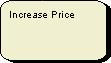
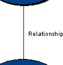
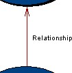
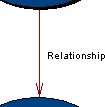
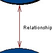
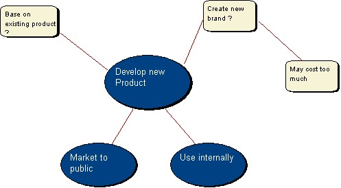

|
|
Brain Storming Model
The brain storming model allows a user to identify a number of goals
and ideas that may help to achieve the goals. This type of model is
typically used as a soft approach to identifying the direction an
organization may take or the possible processes that should be taken in
order to help solve a problem. As with other soft approaches few rules
are enforced by the tool allowing the user to freely express their
ideas.
To view the main multi-CASE help page click
here
|
|
|
|

Goal & Sub-Goal
Definition: A goal represents something that is to be achieved, i.e. a
specific aim. A sub-goal represents something that is to be achieved in order to
achieve the parent goal.
Representation: A goal is represented by an oval with a name label.
The default color of a goal is blue. A sub-goal is represented in the same way
but each sub goal is smaller than the goal it is attached to. Goals and
sub-goals can also be represented by a user selected image. When a goal is
represented this way it is known as an image goal.

Creation: When the diagram is created a goal will be added
automatically. The text can be altered by double clicking on the goal. To add
another parent goal right click on the diagram editor and select "Add Goal" from
the menu. Left click when the mouse is over the area where you wish the goal to
be positioned. To add a sub goal to an existing goal right click on the goal and
select "Add Sub-Goal" from the menu and left click when the mouse is over the
area where you wish the sub-goal to be positioned. When a sub-goal is added a
link is added automatically.
To add an image goal right click on the diagram editor and select "Add Image
Goal" from the menu. Left click when the mouse is over the area where you wish
the goal to be positioned. To add a sub-image goal to an existing goal right
click on the goal and select "Add Image Sub-Goal" from the menu and left click
when the mouse is over the area where you wish the sub-goal to be positioned.
When an image sub-goal is added a link is added automatically.
Rules: A goal may be added to the main diagram but a sub-goal may only
be added to an existing goal or sub-goal.
Operations: Move Forwards/Backwards, Bring to Front, Send to Back,
Delete, Add Related Idea, Add Related "Image" Idea, Add Sub-Goal, Add "Image"
Sub-Goal, Add Relationship, Convert to Image/View As Symbol, Change Goal/Text
Color, Edit Goal Annotation/Name.
Back To Top
Idea & Sub-Related Idea
Definition: A related idea is an idea of how to achieve the
goal to which it is attached. A sub-related idea is a way of
further breaking down the parent idea.
Representation: A related idea is represented by a rectangle with
rounded corners and has a name label inside. By default a related idea is
yellow. A sub-related idea is represented in the same way. Related ideas and
sub-related ideas can also be represented by a user selected image.

Creation: To add a related idea right click on a goal or another
related idea and select "Add Related Idea" from the menu. Left click when the
mouse is over the area where you wish the idea to be positioned. When an idea is
added a link is added automatically. To add a sub-related idea to an existing
idea right click on the idea and select "Add Sub-Idea" from the menu and left
click when the mouse is over the area where you want the sub idea to be
positioned. When a sub idea is added a link is added automatically.
To add a related image idea right click on a goal or another related idea and
select "Add Related Image Idea" from the menu. Left click when the mouse is over
the area you want the idea to be positioned. When an idea is added a link is
added automatically. To add a sub related image idea to an existing idea right
click on the idea and select "Add Image Sub-Idea" from the menu and left click
when the mouse is over the area where you want the sub idea to be positioned.
When a sub idea is added a link is added automatically.
Rules: A related idea may only be added to an existing goal and a
sub-related idea may only be added to an existing related idea.
Operations: Move Forwards/Backwards, Bring to Front, Send to Back,
Delete, Add Sub-Idea, Add "Image" Sub-Idea, Add Relationship, Convert to
Image/View As Symbol, Change Idea/Text Color, Edit Idea Annotation/Name.
Back To Top
Relationship
Definition: A relationship is used to model some type of association
between two elements within the model. The nature of this relationship is
dependent on the context of the model, i.e. the meaning of the relationship is
determined by the modeler rather than the tool.
Representation: Relationships are represented as lines between
elements. These can be simple lines, single arrows pointing either way or double
headed arrows. To change the appearance of a relationship right click the link
and select one of the four "Show As ..." options.




Creation: Relationships are created by right clicking on the element
you wish to be the source of the relationship and selecting the "Add
Relationship" option from the menu. You must then left click the element you
wish to be the destination. The relationship will now be created and drawn
between the two elements.
Rules: Relationships may connect any two elements, and can even link
to the diagram background if required.
Operations: Move Forwards/Backwards, Bring to Front, Send to Back,
Delete, Add/Remove Link Point, Edit Link Type, Show As
----- / <---- / ----> / <--->, Edit Link Annotation/Label.
Example
Below is an example of a Brain Storming Model
